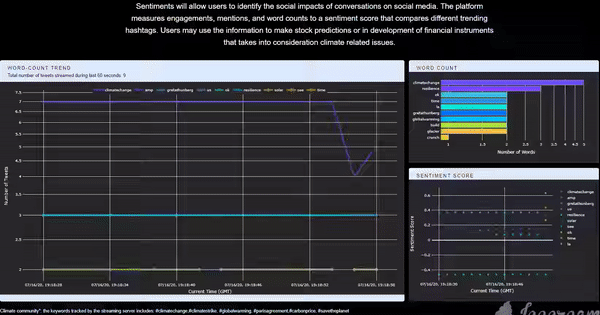
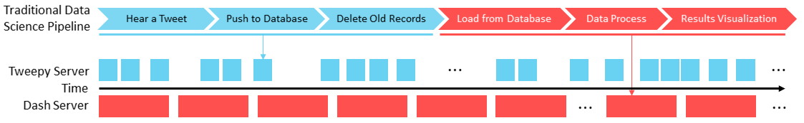

Twitter Data Analysis
Live Twitter Data Analysis and Visualization using Python and Plotly Dash
Introduction
Twitter is a platform that embraces tons of information flow in every single second, which should be fully utilized if one wants to explore the real-time interaction between communities and real-life events. I think it would be cool to have an application that is capable of collecting, storing, analyzing, and finally, visualizing Twitter data in real-time so that we could know what is precisely happening by the time people run the application. Having this exciting idea in mind, I implemented this app and deployed it to the cloud. The app itself can be accessed through this link (Figure 1). The app collects all the tweets related to the climate change community posted and visualizes some statistics. The first panel on the left-hand side is a line plot of the word-count trend, showing the changing pattern of the top-5 most frequently mentioned words. The top panel on the right-hand side is a bar chart showing the top-10 words for better comparison. The figure below is a time-shifting scatter plot of the averaged real-time sentiment score for all the tweets grouped by the top-5 mentioned words. With the predefined tracking keywords, the user can get the corresponding real-time reaction from the Twitter community (for the climate change community in this example) about a specific topic. It can also be integrated into a recommendation system that requires short reacting time, or a Twitter surveillance system during an event, etc. In this post, I will talk about the framework and tools that I used to build this app.
Application Framework
I introduced how to stream tweets with Python using Tweepy package in one of the old posts. But previously, the process of data collection, data migration, storage, and processing are handled in individual steps, or even totally different timelines. For example, if the goal is to collect all the tweets that tweeted in the next two days, we will have to wait for 48 hours for the streaming to finish, then we can start to process the data. No matter how fast we finish the downstream work, there is still at least a two-day gap between the time when we collected the first record and the time we gain insight from the data. For this live streaming app, however, the traditional workflow is divided into two independent pipelines working together (Figure 2). In detail, data processing starts right after the first line of record is received, followed by data analyzing and results-visualization, etc. While the visualization server (Plotly Dash) is handling data-processing, the streaming server (Tweepy), on the other hand, will bring in the next line of newly generated data. Each pipeline keeps looping at its own pace. Figure 2 shows the underlying framework of all the processes described:
